- Never rely solely on the panoramic view monitor system. As with unequipped vehicles, drive carefully while directly confirming the safety of your surroundings and the area to the rear of the vehicle. Take particular care to avoid parked cars and other obstacles.
- Due to the characteristics of the camera lens, the actual position and distance of people and other obstacles will differ from those shown on the panoramic view monitor screen. Directly confirm the safety of your surroundings before driving.
- Never drive while looking only at the screen as the image on the screen is different from actual conditions. If you are driving while looking only at the screen, you may hit a person or an object, resulting in an accident. When driving, be sure to check the vehicle's surroundings with your own eyes and the vehicle's mirrors.
- In low temperatures, the screen may darken or the images may become faint. Images of moving objects in particular may distort or disappear from the screen. Therefore, make sure to drive carefully while directly visually confirming the safety of your surroundings.
| Last Modified: 10-07-2025 | 6.11:8.1.0 | Doc ID: NM100000002GLDM |
| Model Year Start: 2024 | Model: Tacoma | Prod Date Range: [12/2023 - ] |
| Title: PARK ASSIST / MONITORING: PANORAMIC VIEW MONITOR SYSTEM: GENERAL; 2024 - 2026 MY Tacoma Tacoma HV [12/2023 - ] | ||
GENERAL
OUTLINE
(a) A panoramic view monitor system is provided which displays a panoramic view of the vehicle to assist the driver during parking and low speed driving. The panoramic image is created by seamlessly combining images from each television camera assembly installed to the front, rear, left and right sides of the vehicle.
(b) In each mode, the displayed screen can be switched and the display area can be changed by touching the display screen camera image or button.
(c) The panoramic view monitor provides a variety of image display modes to make confirming the area around the vehicle possible with driving condition assistance such as confirming obstacles when driving forward or reversing. These display modes include simultaneous display of the panoramic view and the front view, rear view, front split view or rear split view, display of the BED view to check the rear deck, and display of the wide front view or wide rear view.
(d) This system uses the full-screen display on the 14-inch wide display to make it possible for the driver to easily confirm the surroundings and simultaneously confirm a wide range on a single screen.
(e) A trailer backup guide is provided to assist in backing up a trailer. It is enabled by pressing the trailer backup guidance switch when a trailer is connected. The trailer backup guide has 2 modes: "Straight Path Assist (SPA)" for reversing a trailer straight back without the driver having to grip the steering wheel, and "guidance for manual steering backup (Guidance mode)" for providing a trailer angle (jackknife) warning when reversing a trailer straight back and indicating the trailer turning direction on the multi-display.
(f) As the trailer backup guide uses the rear camera to detect the trailer and calculate the trailer angle, a trailer hitch light is provided to allow the driver to use the system at night.
(g) A function, which automatically displays the panoramic view and front view screen when the intuitive parking assist system detects a stationary object, is used.
(h) A zoom mode, which displays an expanded view of the screen displaying the camera image by pressing the zoom button in the screen, and a panoramic view zoom function, which enlarges panoramic view screen images from the left and right corners of the vehicle in the traveling direction (forward or backward), are provided.
NOTICE:
Do not rely solely upon the panoramic view monitor system. As with unequipped models, drive carefully while directly confirming the safety of your surroundings.

|
Display Mode |
Display |
Shift Position |
Notes |
|---|---|---|---|
|
See Through View Mode |
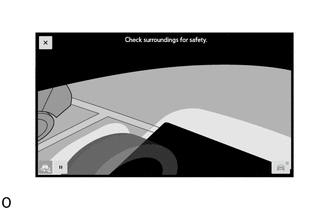 |
P |
Used to check the conditions around the vehicle from a first-person perspective when the vehicle is parked. |
|
Moving View Mode |
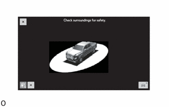 |
P |
Used to check the conditions around the vehicle from a third-person perspective when the vehicle is parked. |
|
Panoramic View and Front View Mode |
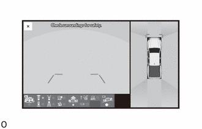 |
Except P |
Used to check the conditions around and in front of the vehicle when driving at low speed. |
|
Wide Front View Mode |
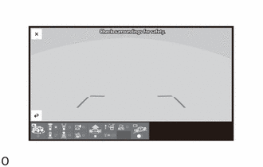 |
Except P |
Used to check the front of the vehicle at low speeds |
|
Panoramic View and Front Split View Mode |
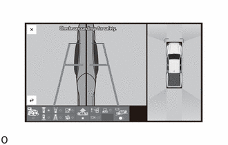 |
Except P |
Used to check the conditions around and in side of the vehicle when driving at low speed. |
|
Panoramic View and Rear View Mode |
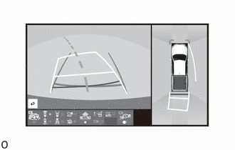 |
Except P |
When backing up, this is used to check the conditions around and behind the vehicle. |
|
Wide Rear View Mode |
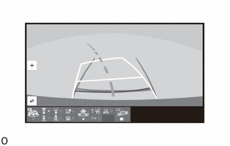 |
Except P |
When backing up, this is used to check the conditions behind the vehicle. |
|
Panoramic View and Rear Split View Mode |
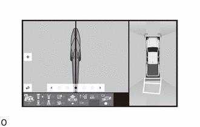 |
Except P |
Used to check the conditions around and in side of the vehicle when driving at low speed. |
|
Bed View Mode |
 |
Except P |
Used to check the rear deck and the rear of the vehicle at low speeds |
|
3D View |
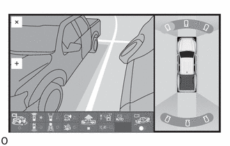 |
Except P |
Used to check the conditions around the vehicle when driving at low speed. |
HINT:
The illustrations shown are example only. The illustrations may differ from the actual vehicle screens.
MAIN FEATURES
(a) The panoramic view monitor seamlessly combines images from the front, rear, left and right television camera assemblies and displays the combined images as the panoramic view image. In addition, the system helps the driver to confirm conditions around the vehicle and to assist in driving at low speeds or parked, by simultaneously displaying the panoramic view and the front view, the rear view and wide rear view, the front split view and rear split view, and displaying the BED view, and displaying the wide front view or wide rear view which has a wider visual field than normal, on the radio and display receiver assembly screen.
(1) The front image (front view and wide front view) helps the driver confirm whether it is safe to start off at locations with poor visibility, such as intersections and T-junctions.
(2) The rear image (rear view and wide rear view screen) helps the driver reverse the vehicle.
(3) The front split view helps the driver to confirm the safety of the areas to the sides of the vehicle, avoid contact with obstacles on narrow roads, and drive close to the shoulder.
(4) The rear split view helps the driver to confirm the safety of the areas to the sides of the vehicle and to confirm blind spots when towing a trailer.
(5) The BED view can be used to check the load status of the rear deck even when driving.
NOTICE:
The panoramic view monitor system is an auxiliary device used to confirm the area around the vehicle. Always drive while directly confirming the surroundings of the vehicle (particularly the area to the rear).
(b) The see through view and moving view combines images from the cameras on the front, rear, and both sides of the vehicle into a simulated video display of the area surrounding the vehicle. By reducing the size of the blind spots from inside the vehicle, it assists in confirming the safety of the area around the vehicle.
HINT:
The see through view and moving view screens can be displayed when the intuitive parking assist is on.

|
*a |
See Through View |
*b |
Moving View |
PRECAUTION
(a) When driving, directly confirm the surroundings of the vehicle (particularly the area to the rear). Failure to do so can lead to unforeseen accidents, such as collisions with other vehicles, etc. Make sure to observe the following precautions when using the panoramic view monitor system.
|
|
(b) Precautions for guide lines
|
The tire position indicator lines and vehicle position indicator lines may differ from actual vehicle positions depending on the number of passengers, cargo weight, road grade, road surface conditions, brightness of the surrounding environment, etc. Always drive the vehicle while confirming the safety of your surroundings. |
(c) Precautions for panoramic view monitor screen display
|
(d) Area displayed on screen
|
|
*a |
See Through View |
*b |
Moving View |
|
*c |
Panoramic View |
*d |
Obstacles in Blind Spot Area |
 |
Blind Spot Area not Displayed on Monitor |
- |
- |
|
*a |
See Through View |
*b |
Moving View |
|
*c |
Panoramic View |
*d |
Obstacle |

|
*a |
Image Combination Area |
- |
- |
(1) Front view, front split view, rear view and wide rear view, rear split view, hitch zoom view, BED view
|
Front Television Camera Assembly Visible Area (Front View Screen)

 |
Obstacle Not Displayed |
- |
- |
Side Television Camera Assembly Visible Area (Front Split View Screen)
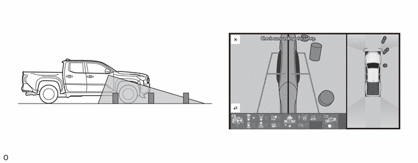Side Television Camera Assembly Visible Area (Rear Split View Screen)
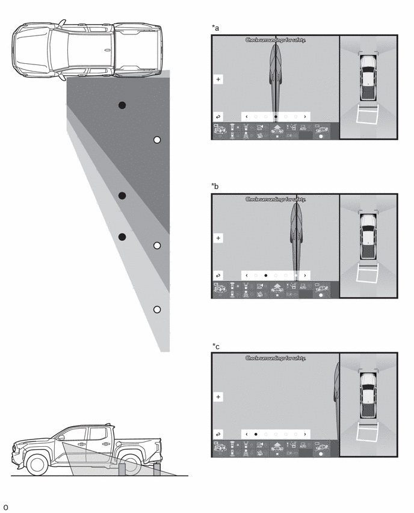|
*a |
Camera Image Range (Left: 50%/Right:50%) |
*b |
Camera Image Range (Left: 75%/Right:25%) |
|
*c |
Camera Image Range (Left: 100%) |
- |
- |
Rear Television Camera Assembly Visible Area (Rear View Screen)

|
Obstacle Not Displayed |
- |
- |
Rear Television Camera Assembly Visible Area (Wide Rear View Screen)
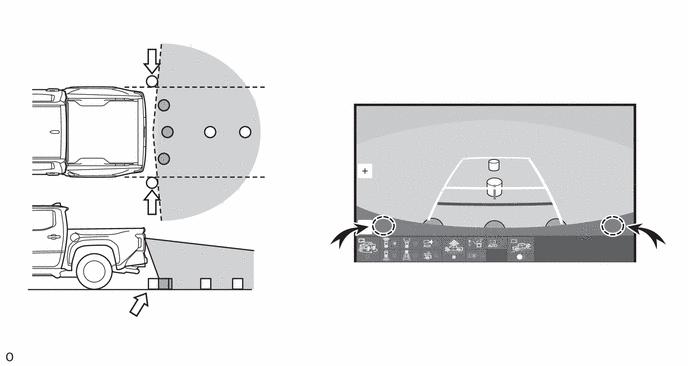 |
Obstacle Not Displayed |
- |
- |
Rear Television Camera Assembly Visible Area (Hitch Zoom View Screen)
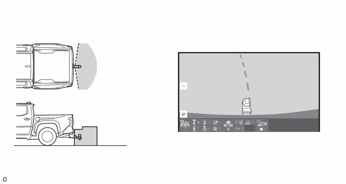Rear Television Camera Assembly Visible Area (BED View Screen)
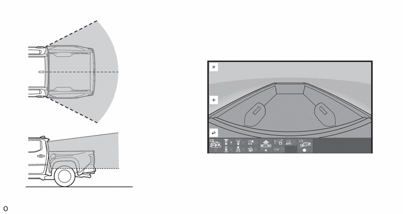Rear Television Camera Assembly Visible Area (BED Zoom View Screen)
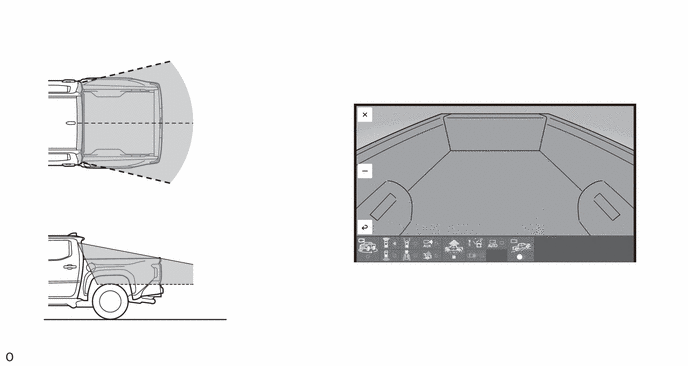(e) Television camera assembly precautions
(1) Make sure to follow the precautions below to ensure the panoramic view monitor system operates normally.
|
(2) If the camera is hit, a malfunction may occur. Have the vehicle inspected by your dealer as soon as possible.
(3) If dirt or foreign matter (such as water droplets, snow, mud, etc.) is adhering to the camera, it cannot transmit a clear image. In this case, flush it with a large quantity of water and wipe the camera lens clean with a soft and wet cloth.
(f) Road condition precautions
(1) Combined images and guide lines on the panoramic view monitor system show the distance based on a flat road surface. Therefore, in the following conditions, the distance and traveling path indicated by the guide lines displayed on the monitor may slightly differ from the actual ones.
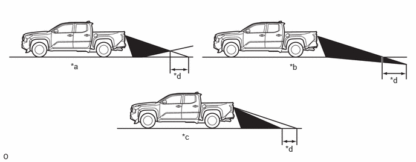|
*a |
Steep Uphill Incline behind Vehicle |
*b |
Steep Downhill Incline behind Vehicle |
|
*c |
Vehicle Posture Changed by Passengers and Load |
*d |
Disparity |
(2) If a steep uphill incline is behind the vehicle, an obstacle will appear to be further away than it actually is, as shown in the illustration below.

|
*a |
Screen Image in Case A |
*b |
Screen Image in Case B |
(g) Precautions for 3-dimensional obstacles
(1) Guide lines on the monitor are for flat surfaces (such as roads, etc.). When protruding solid objects (obstacles such as a truck rear deck) or solid objects located higher than the road surface (the bumper, etc.) are nearby, directly confirm the surroundings of the vehicle.
(2) Since the estimated course lines of the panoramic view screen are displayed based on a flat road surface, solid objects located higher than the road surface (such as the bumper, protruding wall, truck rear deck, etc.) may not be displayed on the monitor or their actual locations may not be judged. Even if a solid object is outside of the estimated course lines and appears as if it will not contact the vehicle, the object may actually be on the path and the vehicle may contact the object.
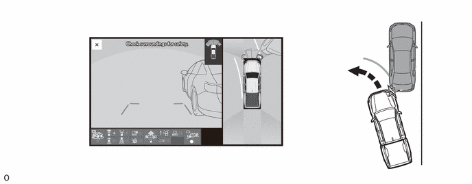 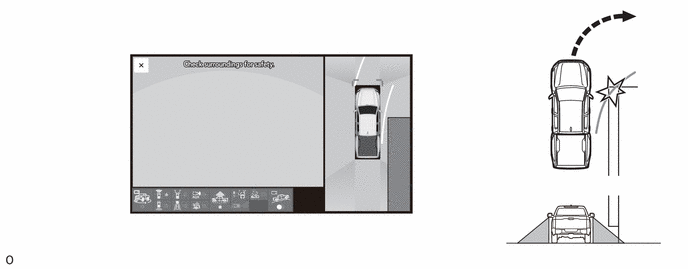(3) Since the estimated course lines of the rear view and wide rear view screens are displayed based on flat roads, the location of solid objects cannot be judged. Even if a truck rear deck is outside of the estimated course lines and appears as if it will not contact the vehicle, the rear deck may actually be protruding into the path and the vehicle may contact the rear deck.
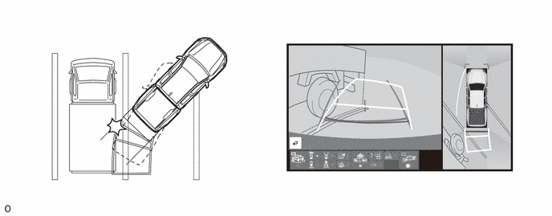(4) The distance indication as shown on the screen varies between 3-dimensional objects such as a vehicle and objects on a flat plane such as the road surface. As shown in the following illustration, points A and C are actually vertically aligned and point B is farther away from them. However, the points are displayed in order of distance from the vehicle, A, B and C. Therefore, the vehicle will come into contact with the 3-dimensional object if it is backed up to point A on the screen.
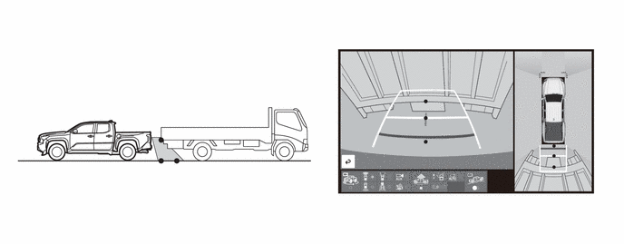(h) Trailer Backup Guide (TBG) Precautions
(1) Cautions regarding the use of the system In order for this system to perform as designed, the vehicle must be driven safely and the driver must control the speed to keep it within operating parameters and to avoid a collision.
(2) As there is a limit to the degree of control performance that this system can provide, do not overly rely on this system. The driver is always responsible for paying attention to the vehicle's surroundings and driving safely. This system does not control braking (or steering when in Guidance mode). Driver needs to control vehicle speed, control braking, (and steering when in Guidance mode,) and stop the vehicle to avoid any collision. Failure to follow this warning could result in property damage, serious injury or death.
(3) The system is designed to operate in various weather and lighting conditions and on different ground surfaces (asphalt, grass, gravel, etc.), however performance can still be affected by various environmental factors (e.g. shadow passing over the trailer or diminished contrast between trailer and the ground leading to trailer detection being lost, etc.) so always drive carefully, remain alert and aware of your surroundings, and do not overly rely on the system.
(4) For proper system performance, observe the following precautions. Failure to do so may lead to an accident resulting in property damage, serious injury, or death.
- Keep the tailgate fully latched.
- Keep the rear camera clean at all times.
- Do not change the installation position or direction of the rear camera or remove it.
- Do not modify the hitch light.
- Make sure nothing can obstruct the rear camera view of the trailer.
(5) The system is designed to support most trailers 2m (6.6 ft.) to 8m (26.2 ft.) in length (length is defined from the coupler center point for the ball to the wheel axle (single axle) or center of the wheel axle (2 or more axles)) with ball mount lengths between 114.3mm (4.5 in.) and 469.9mm (18.5 in.). Do not attempt to use trailers outside of this range as the system performance degrades and could cause improper system function.
(i) Icon Display
(1) The icon of the intuitive parking assist system and Rear Cross Traffic Alert (RCTA) is displayed superimposed on a view captured by the camera. The icon may difficult to see depending on the brightness and color of the surroundings.
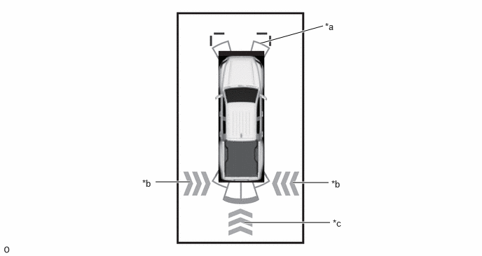|
*a |
Intuitive Parking Assist System Icon |
*b |
RCTA Icon |
|
*c |
RCD Icon |
- |
- |